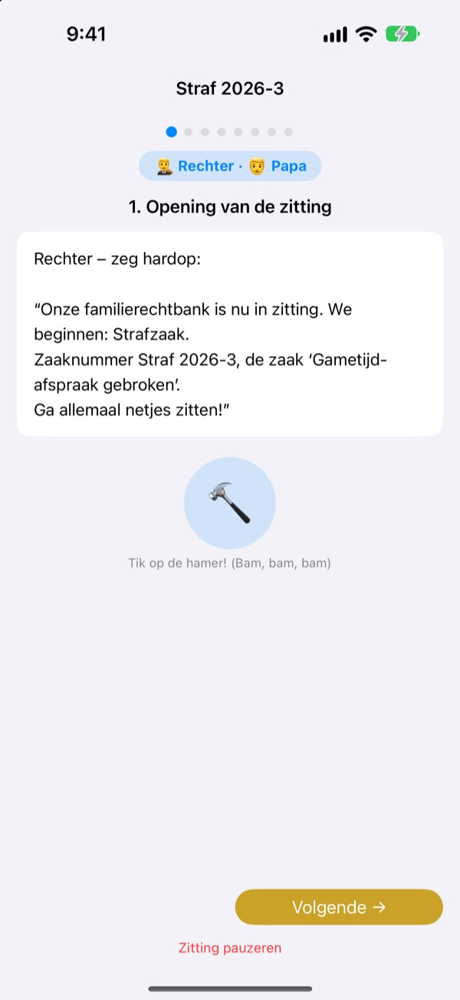
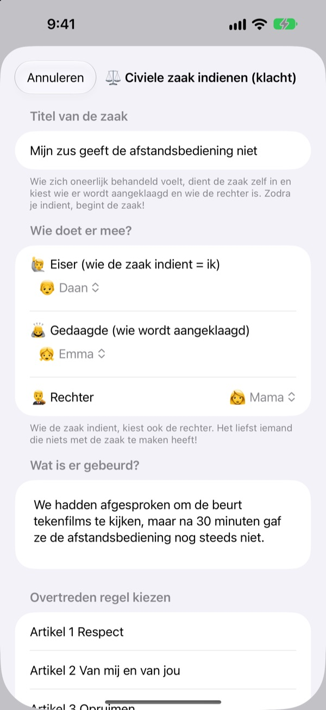
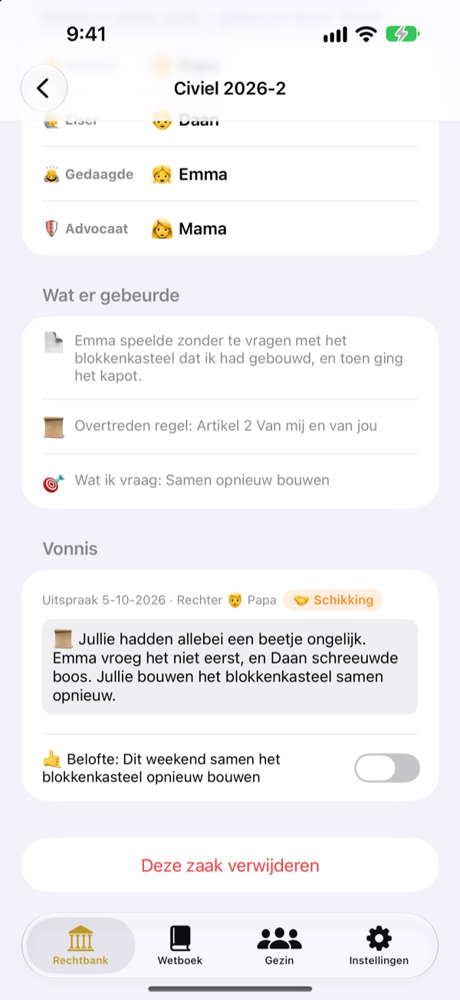
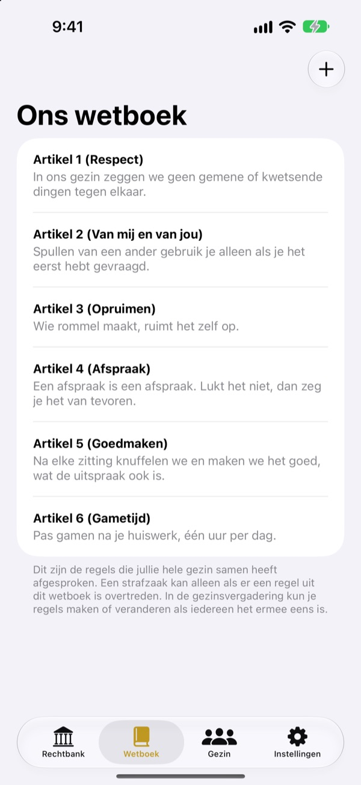

Oneerlijk?
Geen tranen, gewoon naar de rechter.
Je kind dient zelf als eiser de klacht in, en het gezin verdeelt de rollen van rechter en advocaat. Bij elke stap vertelt een script wie aan de beurt is en wat die zegt, dus ook de eerste zaak loopt als een echte.
Geen advertenties, geen aankopen, geen account. Alles blijft op dit apparaat.

Houd een rechtszaak
Een korte zaak: ‘Mijn broertje geeft de afstandsbediening niet.’ Wissel bovenaan het woordniveau, sla met de hamer en start de timer. Er komt geluid uit, dus let op het volume.
‘Hij begon!’ Moe van altijd de scheidsrechter zijn?
Bij ruzie beslist uiteindelijk meestal een volwassene. Wie verliest, huilt omdat het oneerlijk voelt, en wie wint weet niet goed waarom. Familierechtbank geeft kinderen een volgorde: vertel je hele kant en luister de andere kant helemaal uit. En het vonnis eindigt met een belofte, niet alleen met straf.
Wie zich onrecht voelt aangedaan, dient zelf de klacht in
Wie iets oneerlijk vindt, wordt eiser en dient de klacht in. Tegen wie, en wie rechter wordt, kiest de indiener zelf. Kinderen kunnen zelfs papa en mama aanklagen.
Zag je dat iemand een huisregel brak? Word officier van justitie en breng een strafzaak aan. Rechter kan alleen iemand zijn die geen eiser of gedaagde is.

Vonnissen eindigen met een belofte
Bij het vonnis hoort een belofte of straf, en je vinkt die af zodra ze is nagekomen. Afgeronde zaken worden jullie eigen uitspraken.
De strafideeën beginnen bij het goedmaken en gevoelens herstellen, meer herstel dan straf. Minder gamen of tv komt pas als laatste.

Jullie huis, jullie wetten
Schrijf de regels waar jullie het over eens zijn op als artikelen, zoals respect, opruimen en beloftes nakomen, en vul ze aan of pas ze aan wanneer je wilt. In de klacht kies je welke wet is gebroken.
‘Leer de rechtbank kennen’ legt uit wat rechters, eisers, officieren en advocaten doen en hoe een rechtszaak verloopt.

In drie stappen aan de slag
- 1
Voeg je gezin toe
Een naam en een emoji is genoeg. Geen account nodig.
- 2
Dien een zaak in
Oneerlijk? Civiele zaak. Huisregel gebroken? Strafzaak. Kies daarna een rechter.
- 3
Open de zitting
Volg het script, houd de tijd bij met de timer en spreek het vonnis uit met de hamer.
Woorden die meegroeien met je kind
- Rechter
- Makkelijk: Scheidsrechter · Rechtszaal: Voorzitter
- Eiser
- Makkelijk: Wie het oneerlijk vindt · Rechtszaal: Eiser
- Gedaagde
- Makkelijk: Wie antwoordt · Rechtszaal: Gedaagde
- Aanklager
- Makkelijk: Melder · Rechtszaal: Aanklager
- Verdachte
- Makkelijk: Wie antwoordt · Rechtszaal: Verdachte
- Advocaat
- Makkelijk: Helper · Rechtszaal: Advocaat
- Civiele zaak
- Makkelijk: Oneerlijk · Rechtszaal: Civiele zaak
- Strafzaak
- Makkelijk: Regel gebroken · Rechtszaal: Strafzaak
Kies het woordniveau in Instellingen, dan veranderen de woorden op het scherm en in het script tegelijk. Probeer Makkelijk voor kleuters en Standaard voor schoolkinderen.
Veelgestelde vragen
Vanaf welke leeftijd?
Elk kind dat kan lezen speelt mee met een ouder. Met het script, de aanwijzingen en het woordniveau op Makkelijk doen ook jongere kinderen mee als een volwassene voorleest.
Is het echt gratis?
Ja. Geen advertenties en geen aankopen die functies ontgrendelen. In Instellingen staat een vrijwillige fooi voor de ontwikkelaar, maar die ontgrendelt of vergrendelt niets.
Is internet nodig?
Nee. Zittingen en dossiers werken volledig offline. Alleen om feedback te sturen vanuit Instellingen heb je internet en een iCloud-login nodig.
Waar worden de gegevens bewaard?
Gezin, wetten, zittingen en vonnissen staan alleen op het apparaat en gaan naar geen enkele server. De ontwikkelaar krijgt alleen feedback die je zelf stuurt en anonieme gebruiksstatistieken die niet naar jou te herleiden zijn.
Kan ik een back-up maken of overzetten?
Met ‘Gegevens bewaren’ in Instellingen exporteer je alles naar een bestand, en met ‘Gegevens laden’ op het andere apparaat staat alles er weer precies zo. Ook back-ups uit de oude webversie laden gewoon.
Werkt het op de iPad?
Ja, op iPhone en iPad. Een groot scherm is ideaal als het hele gezin eromheen zit.
En als de straffen te zwaar worden?
Als de officier een straf eist, herinnert het script iedereen eraan: niet te zwaar, maar haalbaar. De strafideeën beginnen bij herstel: het goedmaken, gevoelens herstellen en je in de ander verplaatsen.
Hoe verwijder ik alles?
Verwijder je de app, dan verdwijnen alle dossiers op het apparaat mee. Er is nooit iets naar buiten gegaan, dus er blijft ook nergens iets over. Wil je verstuurde feedback laten wissen, stuur ons dan een mail.
Bugs, ideeën of iets anders? Mail naar leeo@kakao.com. Je kunt ook feedback sturen via de instellingen van de app.